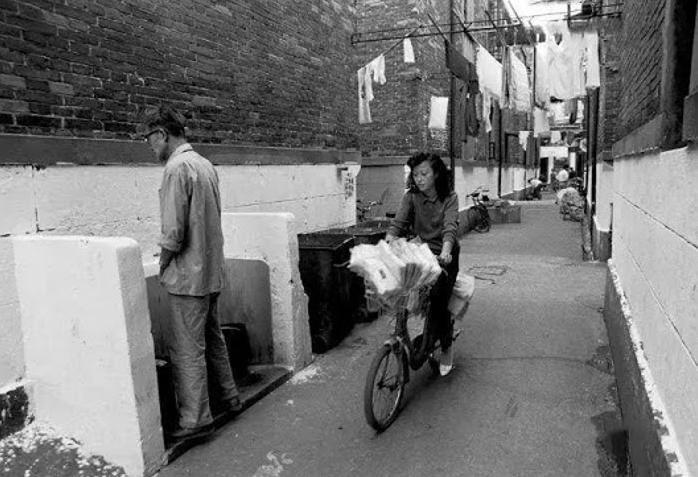

|
回目录 回主页 |

八國聯軍攻入北京城。然而，他們萬萬沒想到的是，進入北京城後，他們發現自己竟置身於一座巨大的露天廁所之中。八國聯軍對此深惡痛絕，並強迫北京市民改變隨地大小便陋習。事實上，在當時的中國，不僅北京如此，全國各地都流行着隨地大小便的陋習。本文摘自騰訊網，作者諶旭彬，原題為《中國近代“全城禁止隨地大小便”，始於八國聯軍》。
1991年上海弄荡中的厕所 八國聯軍進京後，對京城隨地大小便的風氣，採取強硬手段嚴禁。 1900年夏，八國聯軍攻入北京城。然後，他們發現自己置身於一座巨大的露天廁所之中。 戲曲名家齊如山，在這座巨大的露天廁所中生活了多年。據他所見，清末之時，“北平城內，……各大街之甬路，都是高與人齊，矮者也有三四尺高，兩旁的便道也很寬，但除小商棚攤之外，其餘都是大小便的地方，滿街都是屎尿。一下雨則都是水窪。”名妓賽金花，在接受劉半農的口述訪談時，也說：“北京的街道，那時太腌臢了，滿街屎尿無人管。洋人最是嫌膩這個，便下了個命令，叫住戶各自打掃門前的一段，倘有一點污穢，查出來是先打後罰，他們這種辦法，固然太厲害些，可是北京的街道卻賴以潔凈了許多。後來西太后迴鑾抵京，看見街上比從前又整齊，又乾淨，很是喜歡，很誇讚洋人們能幹。” 慈禧有沒有“誇讚洋人們能幹”，不得而知。但八國聯軍對北京城這座露天大廁所深惡痛絕，卻是實情。聯軍入京時，一名叫做“仲芳”（這是此人的字，其姓、名不可考）的讀書人，居住於宣武城南椿樹二巷之“叢桂山房”，留下了一部日記，載有頗多聯軍強迫北京市民改變隨地大小便陋習的情形。如光緒二十六年（1900年）八月初九日記： “德國在通衢出示安民，內有章程四條，其略曰：一德界內糧食，禁止出界外販賣；一各巷街道令各戶修墊平坦，打掃乾淨；一無論鋪戶住戶，每日門前於七點鐘各懸燈一盞，至十一點鐘止；一各街巷俱不準出大小恭，違者重辦。” 聯軍不許隨地大小便，對北京市民的日常生活造成了嚴重“影響”。光緒二十六年九月十七日，仲芳氏記： “近來各界洋人，不許人在街巷出大小恭、潑倒凈桶。大街以南美界內，各巷口皆設公廁，任人方便，並設立除糞公司，挨戶捐錢，專司其事。德界無人倡辦，家家頗甚受難。男人出恭，或借空房，或在數里之外，或半夜乘隙方便，趕緊掃除乾淨。女眷臟穢多在房中存積，無可如何，真所謂諺語‘活人被溺蹩死’也。” 頗多實在憋不住繼續隨地大小便者受到了聯軍的嚴懲。十一月十六日，仲芳氏記： “各國界內雖不準在沿街出恭，然俱建設茅廁，尚稱方便。德界並無人倡率此舉，凡出大小恭或往別界，或在家中。偶有在街上出恭，一經洋人撞見，百般毒打，近日受此凌辱者，不可計數。” 聯軍不僅僅只關注隨地大小便。對京城隨地堆放垃圾的現象，也同樣深惡痛絕。十二月十八日，仲芳氏記： “惟烈風時起，塵沙敗葉吹滿門，必須時刻掃除乾淨，否（則）遇洋人巡查，即遭威嚇。又爐灰穢土，街前不準堆積，無處可倒，家家存積院中。英美各界，均有公捐土車，挨門裝運。惟德界無人倡率此舉，似亦缺事耳。” 次年春夏之際，聯軍陸續撤離北京。北京市民再度獲得隨地大小便、隨處堆放垃圾的自由。仲芳氏深感愉悅，於光緒二十七年（1901年）五月十四日記： “城內城外各段地面，即歸還步軍統領衙門五城巡緝，近日尚稱安靜，搶盜之案亦不甚多。……各街巷掃街、潑水、點燈、倒土、出恭、夜行等事，暫多鬆懈，不甚嚴查究責。究竟我兵同氣連枝，互相憐憫，不比洋人橫暴耳。” 1900年前後，隨地大小便之風並非北京獨有，大者如上海、天津，中者如營口，小者如山海關，都不例外 八國聯軍侵入之前，市民隨地大小便的現象，實非京城獨有。在上海，鄭觀應1890年代之所見是： “余見上海租界街道寬闊平整而潔凈，一入中國地界則污穢不堪，非牛溲馬勃即垃圾臭泥，甚至老幼隨處可以便溺，瘡毒惡疾之人無處不有，雖呻吟仆地皆置不理，惟掩鼻而過之而已。可見有司之失政，富室之無良，何怪乎外人輕侮也。” |
回目录 回主页 |